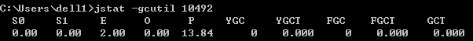

说明：书中作者介绍的的基于 windows 平台下的 JDK1.6 Update 21
可以参考：
http://www.cnblogs.com/SilentHYmn/p/5186486.html
http://blog.csdn.net/coslay/article/details/48932277
# JDK 命令行工具
# 前言
① JDK 命令行工具基本位于 bin 目录下，主要功能代码位于 jdk/lib/tools.jar 中，Linux 中有很多直接是 shell 脚本写的；
② 包含功能强大的监控分析功能；
③ JDK1.5 要开启 JMX 管理功能，-Dcom.sun.managerment.jmxremote；1.6 默认开启
④ Sun JDK 监控和故障处理工具：
| 属性 | 作用 |
|---|---|
| -p | 只输出 LVMID，省略主类的名称 |
| -m | 输出虚拟机进程启动时传递给主类 main（）函数的参数 |
| -l | 输出主类的全名，如果进程执行的是 jar 包，输出 jar 路径 |
| -v | 输出虚拟机进程启动时 jvm 参数 |
# jps：虚拟机进程状况工具
① 使用频率最高的 JDK 命令行工具；
② 格式： jps [ options ] [ hostid ] ；
③ jps 可以通过 RMI 协议查询开启了 RMI 服务的远程虚拟机进程状态，上面的 hostid 即为 RMI 注册表中注册的主机名；
④ 参数：-q、-m、-l、-v；
# jstat：虚拟机统计信息监视工具
① 用于监视虚拟机各种运行状态信息
② 可以显示本地或者远程虚拟机进程中的类装载、内存、垃圾收集、JIT 编译等运行数据；
③ 格式： jstat [ option vmid [ interval[s|ms][count] ] ]
④ vmid 与 lvmid：若是本地虚拟机进程，vmid 和 lvmid 一致；若是远程虚拟机进程，vmid 格式为：[protocol:] [ // ] lvmid [ @hostname:[ :port ]/servername ]
⑤ interval 和 count：查询间隔和次数；
⑥ option：代表用户希望查询的虚拟机信息，分 3 类：类装载、垃圾收集、运行期编译状况；
⑦ 实例： jstat -gc 2764 250 20；意思是每 250ms 查询一次进程 2764 垃圾收集状况，一共查询 20 次；
⑧ jstat 工具主要选项（参数）：
| 选项 | 作用 |
|---|---|
| -class | 监视装载类、卸载类、总空间以及类装载所耗费的时间 |
| -gc | 监视 java 堆状况，包括 eden 区、两个 survivor 区、老年代、永久代等的容量、已用空间、GC 时间合计信息 |
| -gccapacity | 监视内容与 - gc 基本相同，但输出主要关注 java 堆各个区域使用到最大、最小空间 |
| -gcutil | 监视内容与 - gc 基本相同，但输出主要关注已使用控件占总空间的百分比 |
| -gccause | 与 - gcutil 功能一样，但是会额外输出导致上一次 gc 产生的原因 |
| -gcnew | 监视新生代 GC 情况 |
| -gcnewcapacity | 监视内容与 - gcnew 基本相同，输出主要关注使用到的最大、最小空间 |
| -gcold | 监视老年代 GC 情况 |
| -gcoldcapacity | 监视内容与 - gcold 基本相同，输出主要关注使用到的最大、最小空间 |
| -gcpermcapacity | 输出永久代使用到的最大、最小空间 |
| -compiler | 输出 JIT 编译过的方法、耗时等信息 |
| -printcompilation | 输出已经被 JIT 编译过的方法 |
⑨ 执行样例

- E 表示 Eden 区使用了 2% 的空间；
- S0、S1 表示 Survivor 区为空的；
- O 表示老年代为空；
- P 表示永久代使用了 13.84%；
- YGC 表示程序运行以来共发生 Minor GC o 次；
- FGC 表示 Full GC 共发生 0 次；
- GCT 表示所有 GC 总耗时 0 秒；
# jinfo：java 配置信息工具
① 作用：实时查看和调整虚拟机各项参数；
② 格式： jinfo [ option ] pid ;
③ 实例：查询 CMSInitiatingOccupancyFraction 参数值： jinfo -flag CMSInitiatingOccupancyFraction 1444
# jmap：java 内存映像工具
① 作用：用于生成堆转储快照（一般称为 heapdump 或 dump 文件），查询 finalize 执行队列、java 堆和永久代的详细信息（如空间使用率、当前用的是哪种收集器等）；
② 格式： jmap [ option ] vmid ;
| 选项 | 作用 |
|---|---|
| -dump | 生成 java 堆转储快照。格式为： -dump:[live,] format=b,file=<filename>, 其中 live 子参数说明是否只 dump 出存活的对象 |
| -finalizerinfo | 显示在 F-Queue 中等待 Finalizer 线程执行 finalize 方法的对象。只在 Linux/Solaris 平台下有效 |
| -heap | 显示 java 堆详细信息，如使用哪种收集器、参数配置、分代情况等，在 Linux/Solaris 平台下有效 |
| -jisto | 显示堆中对象统计信息，包含类、实例对象、合集容量 |
| -permstat | 以 ClassLoader 为统计口径显示永久代内存状态。只在 Linux/Solaris 平台下有效 |
| -F | 当虚拟机进程对 - dump 选项没有相应时。可使用这个选项强制生成 dump 快照。只在 Linux/Solaris 平台下有效 |
③ 实例：使用 jmap 生成一个正在运行的 Eclipse 的 dump 快照文件，例子中 3500 是通过 jps 命令查询到的 lvmid： jmap -dump:format=b,file=eclipse.bin 3500
# jhat：虚拟机堆转储快照分析工具
① 与 jmap 搭配使用，分析结果可在浏览器中查看；
② 作者建议不适用这个工具，有俩原因功能简陋且分析耗时；
# jstack：java 堆栈跟踪工具
① 作用：用于生成虚拟机当前时刻的线程快照（一般称为 threaddump 或者 javacore 文件），生成目的主要是定位线程出现长时间停顿的原因，如死锁、死循环、请求超时等；
② 格式： jstack [ option ] vmid ;
③ 选项（参数）：
| 选项 | 作用 |
|---|---|
| -F | 当正常输出的请求不被响应时，强制输出线程堆栈 |
| -l | 除堆栈外，显示关于锁的附加信息 |
| -m | 如果调用到本地方法的话，可以显示 c/c++ 的堆栈 |
# HSDIS：JIT 生成代码反汇编
① 说明：Sun 推荐的 HotSpot 虚拟机 JIT 编译代码的反汇编插件，包含在 HotSpot 虚拟机源码中；
② 作用：让 HotSpot 的 - XX:+PrintAssembly 指令调用它来把动态生成的动态代码还原为汇编代码输出，同时生成大量非常有价值的注释；